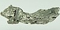

gadolinium

Definition: Gadolinium is a chemical element with the symbol Gd and atomic number 64. Gadolinium is a silvery-white metal when oxidation is removed. It is only slightly malleable and is a ductile rare-earth element. Gadolinium reacts with atmospheric oxygen or moisture slowly to form a black coating. Gadolinium below its Curie point of 20 °C (68 °F) is ferromagnetic, with an attraction to a magnetic field higher than that of nickel. Above this temperature it is the most paramagnetic element. It is found in nature only in an oxidized form. When separated, it usually has impurities of the other rare-earths because of their similar chemical properties.
Source: Wikipedia
Wikipedia Page (Something wrong with this association? Let us know.)
Wikidata Page (Something wrong with this association? Let us know.)